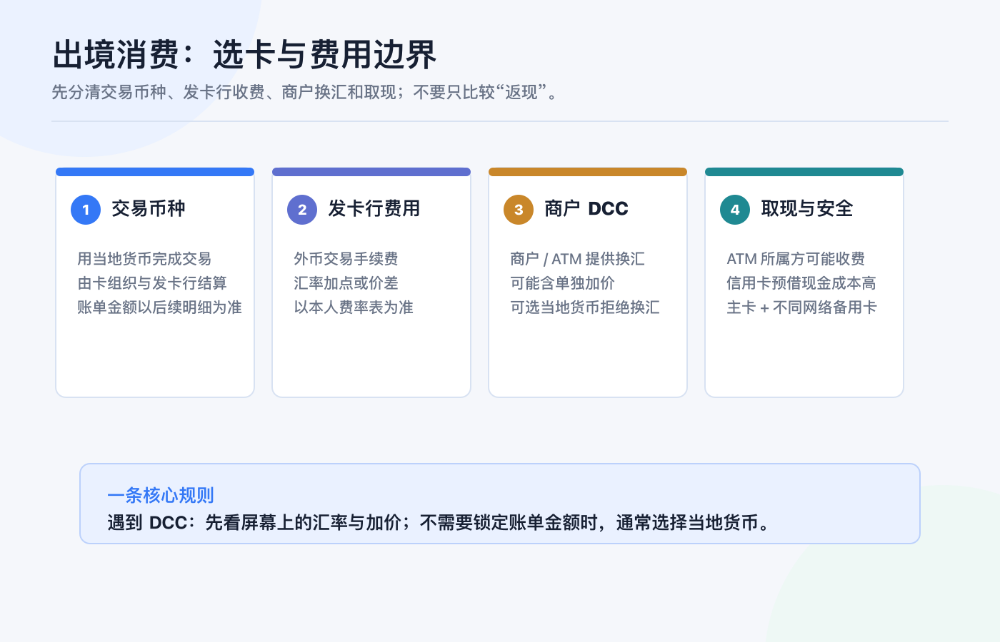
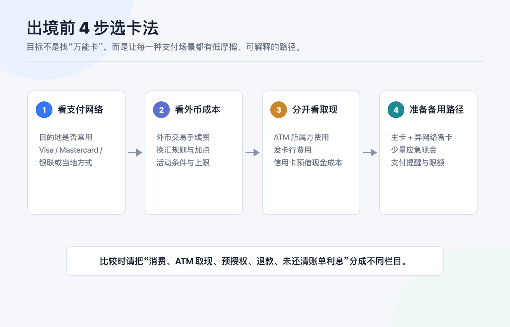
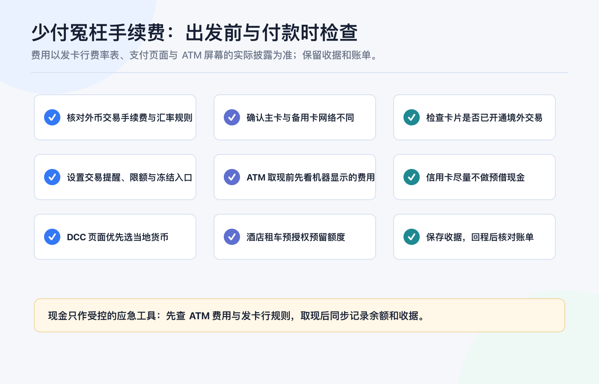

境外银行卡不只用来入金：出境消费时如何选卡和避免手续费
先说结论：出境消费不该只问“这张卡有没有返现”，而要先把支付网络、外币交易成本、商户换汇、ATM 取现和备用路径分开看。
一张卡能给券商入金，不代表它就适合在旅途中刷卡；一张卡免年费，也不代表外币交易、取现、动态货币兑换（DCC）或酒店预授权的成本最低。更稳妥的做法是：出发前为每个场景指定一条主路径，再准备一条不依赖同一支付网络的备用路径。
本文只提供出境支付的通用检查框架，不构成任何银行、信用卡、投资、税务、法律、换汇或跨境资金建议。卡片功能、境外交易开关、费用、汇率、奖励、取现限额、争议处理与可用性，会因发卡行、卡组织、账户实体、地区和产品版本而变化；付款前请以本人发卡行的最新费率表、卡片条款和支付页面披露为准。资料核对日期：2026-07-23。

先拆清楚：一笔境外消费的钱到底花在哪
把“外币刷卡手续费”当成一个数字，最容易比较错卡。一次出境支付至少可能经过五层：
| 层级 | 你要看什么 | 容易被忽略的边界 |
|---|---|---|
| 商户标价 | 商品或服务以什么币种报价 | 标价币种不等于最终入账币种；线上页面也可能主动切换货币。 |
| 卡组织与发卡行结算 | 卡组织汇率、发卡行换汇规则、外币交易手续费 | 具体汇率、加点与费用必须以本人发卡行条款和账单为准。 |
| 商户 DCC | 商户或 ATM 提议把当地货币即时换成你的账单币种 | 这是一项额外的换汇服务，不是“免换汇”。 |
| ATM 取现 | ATM 所属方费用、发卡行费用、汇率与限额 | 信用卡的预借现金通常还会涉及单独的手续费与利息规则。 |
| 预授权与退款 | 酒店、租车、加油站先冻结额度，之后才结算或撤销 | 可用额度、实际扣款、退款到账和汇率差可能不在同一天发生。 |
因此，比较两张卡时，至少要把普通消费、ATM 取现、预授权、退款和未还清信用卡账单后的利息拆成不同栏目。只看“境外消费返 X%”或“免外币交易费”都不够。
Visa 的消费者说明指出：当商户或 ATM 提供 DCC 时，屏幕或收据应清楚展示当地币金额、持卡人账单币金额、汇率与附加费用/加价，并让持卡人选择接受或拒绝；商户和 ATM 不应代替持卡人作出选择。Visa：DCC 说明
DCC 是什么：为什么“换成人民币/港币/美元结算”不一定省钱
DCC（Dynamic Currency Conversion，动态货币兑换）指商户或 ATM 在支付当下，主动把当地货币转换为你卡片的账单币种。它的吸引力是：你立刻知道一个熟悉货币的金额；但代价是，这笔换汇不再只由卡组织和发卡行的正常结算流程决定，商户侧的换汇服务可能包含额外的加价。
最实用的现场判断不是死记某一个币种，而是看清楚选项：
| 屏幕出现的选项 | 该怎么理解 | 下一步 |
|---|---|---|
| “Pay in local currency / 以当地货币支付” | 交易先以商户所在地区的本币提交 | 通常让卡组织与发卡行按你的卡片规则处理换汇。 |
| “Pay in CNY / HKD / USD”等账单币 | 商户或 ATM 提供了 DCC 换汇 | 先看披露的汇率、加价和最终金额；不需要锁定金额时，通常选择当地货币。 |
| 未展示完整汇率或被默认选中 | 你无法比较这项商户侧换汇的总成本 | 让店员取消/重新操作，或拒绝 DCC；保留收据并联系发卡行。 |
Visa 的规则支持页面写明，境外使用 Visa 卡时，持卡人必须有机会选择按当地货币处理；若商户未提供这种选择，Visa 建议通知发卡行。Visa：货币转换与持卡人选择
这不是说“当地货币永远一定更便宜”。如果你的发卡行对外币交易收取较高费用、而你确实愿意接受眼前披露的 DCC 总价，结果可能不同。正确的原则是：比较总成本后主动选择，而不是让商户或终端替你选择。 Mastercard 的 DCC 指引同样要求在选择前披露本地币金额、持卡人账单币金额、汇率和可能的额外加价。Mastercard：DCC Performance Guide（2025）
选卡不要按“等级”，按四个真实场景

场景一：日常小额刷卡
优先确认目的地的受理网络、你卡片的外币交易费用和手机支付可用性。把“有实体卡”与“能用手机钱包”分开确认：有些地区的交通、便利店和小额商户高度依赖感应支付，而有些银行卡、发卡地区或数字钱包对境外绑卡另有条件。
你的目标不是带最多卡，而是带一张你已验证过的主卡，并有一张不同网络或不同发卡行的备用卡。一次 45 天跨国旅行记录曾采用 Visa 与 Mastercard 互为备用、少量现金兜底的方式；这里仅把它当作“不要把单一路径当成确定性”的经验提示，不把其中旧卡权益、受理情况或活动当作当前事实。
场景二：酒店、租车和押金类预授权
酒店、租车和部分加油站可能先做预授权：它会占用可用额度，但不是最终扣款。出发前要确认三件事：
1. 主卡的可用额度是否覆盖“房费/租金 + 押金 + 可能的汇率波动”； 2. 备用卡是否也能独立完成入住或租车，而不是只用来买咖啡； 3. 撤销预授权或退款到账的时间，以商户、收单机构和发卡行的流程为准，不要把冻结金额当成已经永久扣款。
若预授权异常，保存订单、授权单、收据和聊天记录；先找商户确认撤销，再按发卡行规定提出查询或争议。不要仅凭 App 里的“待处理”状态自行判断最终费用。
场景三：ATM 取现与必须用现金的地方
现金是备用支付手段，不是自动更便宜的选择。ATM 取现的成本可能叠加：ATM 所属方费用、发卡行的跨境或取现费用、汇率差，以及信用卡预借现金的利息规则。香港金融管理局的消费者提示明确提醒，使用信用卡预借现金通常没有免息期，发卡行还可能按比例或每笔收取处理费；境外使用前也应了解发卡行外币交易费用。香港金融管理局：信用卡消费者提示
所以我的默认顺序是：
1. 能安全、透明地刷卡或手机支付时，先用消费卡； 2. 必须取现时，先看 ATM 屏幕上披露的费用与 DCC 选项； 3. 用借记卡还是信用卡取现，必须按你自己的发卡行规则比较； 4. 取现后记录金额、币种、ATM 收据和账户余额，避免回程无法核对。
场景四：线上订房、改签和退款
线上页面同样可能出现商户换汇或多币种定价。下单前保留“价格币种、付款币种、是否可退款、退款币种、取消条款”的截图。退款不一定按照你最初看到的本币折算金额到账：退款日、原支付日和最终清算日可能不同，汇率与发卡行规则也可能不同。
不要为了拿奖励去忽略退款与取消条件。对高金额、可退订或未来才履约的订单，尤其要确认自己能下载订单确认、商户条款和卡片交易记录。
出发前的最小选卡表：每张卡都填一遍
你不需要把卡片按“最好/最差”排队，只需要为本次旅程填这一张表：
| 项目 | 主卡 | 备用卡 | 现金/第三路径 |
|---|---|---|---|
| 支付网络与目的地受理情况 | |||
| 普通外币消费手续费与汇率规则 | |||
| 是否支持感应/手机支付 | |||
| 境外交易是否需要预先开通 | |||
| 单笔、单日和可用额度 | |||
| ATM 所属方、发卡行与预借现金成本 | |||
| 酒店/租车预授权可承受额度 | |||
| 交易提醒、冻结入口、海外客服 | |||
| 账单日、还款日、可下载记录 |
如果一张卡只能解决“消费”，另一张只能解决“取现”，这不是问题；问题是你没有提前知道每张卡到底负责什么。把角色写清楚，也能避免到当地才发现主卡因网络、限额、手机号验证或手机没电而失效。
少付冤枉手续费的 9 项检查

1. 出发前看费率表，不只看宣传页。 查清普通外币消费、ATM 取现、预借现金、货币兑换、逾期还款、补卡和争议处理相关条款。 2. 主卡和备用卡不要完全同质。 最理想的备用不是多带一张同一网络、同一发卡行、同一手机验证方式的卡，而是一条真正独立的支付路径。 3. 确认境外交易开关、限额与交易提醒。 不要到收银台才发现卡片因安全设置无法交易。 4. 面对 DCC，先看当地币、账单币、汇率和加价。 没看懂就选择当地货币，或取消交易重新确认。 5. ATM 屏幕上的费用也要确认。 有些费用来自 ATM 所属方，不会因为你的发卡行没有某项费用而消失。 6. 尽量不把信用卡当取现工具。 预借现金的费用与计息规则通常和普通消费不同。 7. 为预授权留出缓冲。 不要让酒店或租车押金占满主卡额度，影响后续交通和紧急付款。 8. 保留收据与订单。 特别是 DCC、ATM、酒店和租车交易；它们是后续核对或争议的基础。 9. 回程后核对原币金额、入账币种、汇率、费用和退款。 旅行账本可先记录原始币种、金额、日期、支出账户和备注，再用账单完成核对；先记录消费币种、再统一复盘，能让后续账单核对更完整。
常见误区：省手续费不是“只带一张零费率卡”
误区一：DCC 显示熟悉货币，所以更安全。 熟悉的数字只解决了可读性，不自动证明总成本更低。应比较已披露的汇率和加价，并保留自己选择的权利。
误区二：免费提现次数等于取现免费。 发卡行的优惠不必然覆盖 ATM 所属方费用、汇率差或信用卡预借现金利息。每次取现都要按实际 ATM 和本人卡片条款看。
误区三：同一银行多带两张卡，就算有备份。 如果它们同受同一账户、同一验证手机号、同一风控限制或同一支付网络影响，故障时可能一起失效。备用路径的价值来自独立性。
误区四：刷卡少就不用对账。 跨币种交易的授权、清算、退款和费用可能分批出现。回程后的核对比旅途中的估算更接近最终结果。
最后的原则：把“选择权”留在自己手里
出境消费最省心的状态，不是每一笔都追到最低汇率，而是你知道每一笔由谁换汇、哪里可能收费、卡被拒时换哪条路径、出问题后凭什么核对。
所以，出发前做好四件事：查主卡费率、带独立备用路径、把 DCC 选择权留给自己、保存能对账的记录。 这样，境外银行卡就不只是入金工具，而是旅行中可控、可复盘的支付基础设施。
官方资料
- Visa：Decoding Dynamic Currency Conversion
- Visa：Travel Credit Cards & Foreign Transactions Explained
- Visa：货币转换与当地货币处理选择
- Mastercard：Dynamic Currency Conversion Performance Guide（2025）
- 香港金融管理局：信用卡消费者提示
资料以 2026-07-23 可访问的官方页面为准。每家发卡行的费用、适用网络、优惠和安全控制都可能变动；在出发前、进行高额预授权、ATM 取现或接受 DCC 前，请再次查看本人卡片的最新费率表与交易页面。